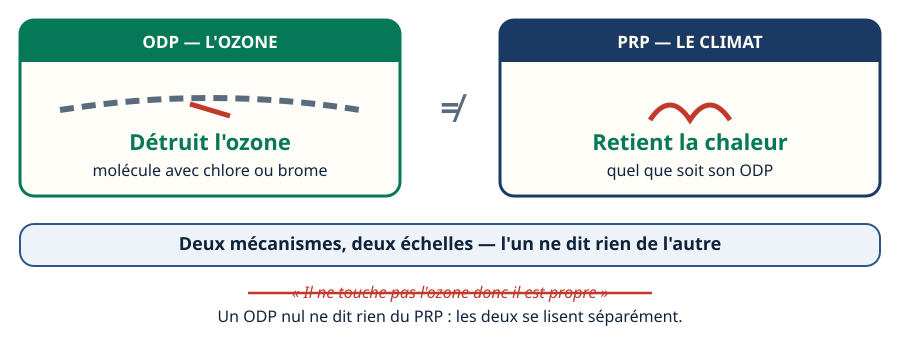
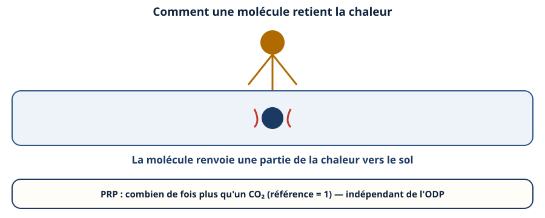
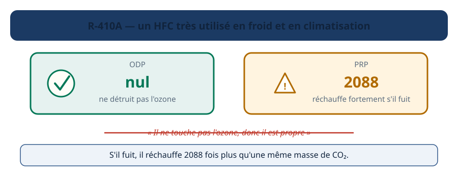
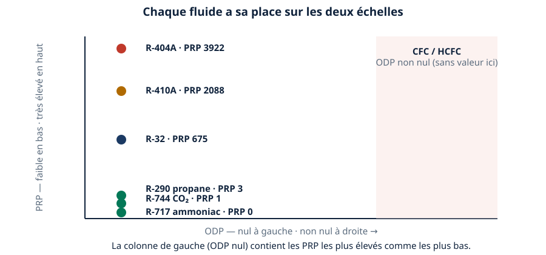
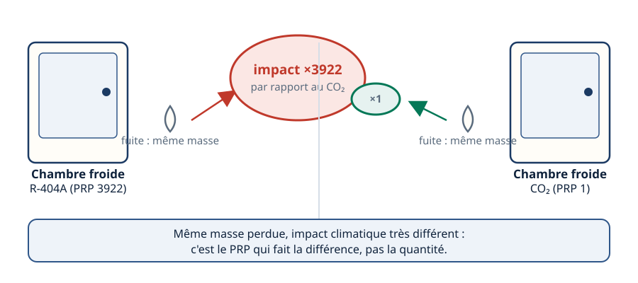
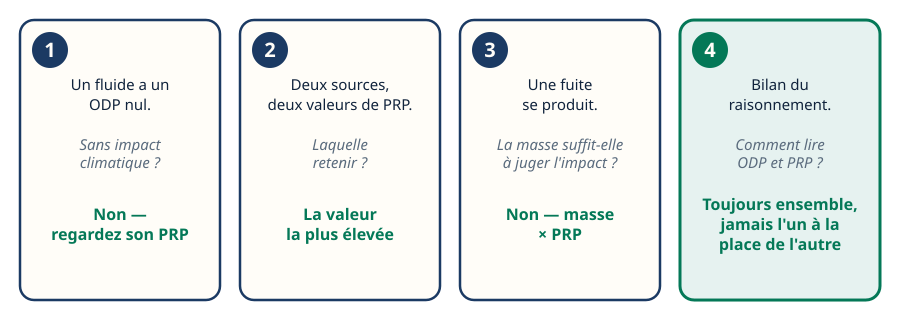
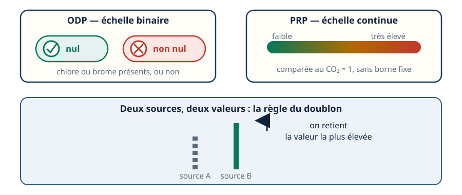
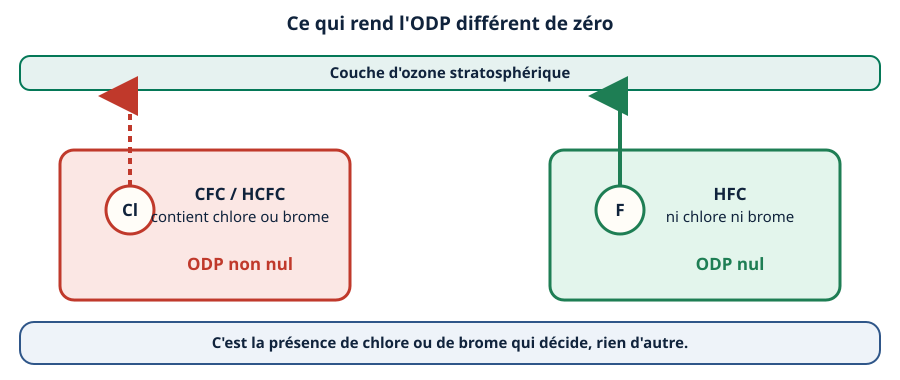

Mini-station commentée · 8 écrans et 4 questions · environ 10 minutes
Objectif
À la fin de la station, vous savez que le PRP et l'ODP mesurent deux choses différentes, par deux mécanismes différents. Vous savez expliquer pourquoi un fluide à ODP nul peut réchauffer fortement le climat, et quelle règle appliquer quand deux sources donnent deux valeurs de PRP.
Chaque écran peut être expliqué à voix haute : le bouton « Écouter » commente ce que vous voyez. Rien n'est dit qui ne soit aussi écrit.
1 / 12
Écran 1 sur 8
Deux impacts, deux mécanismes
Le PRP (pouvoir de réchauffement planétaire) et l'ODP (potentiel de destruction de l'ozone) mesurent deux choses différentes, par deux mécanismes indépendants. Connaître l'un ne dit rien de l'autre.
Un fluide peut avoir un ODP nul — il ne touche pas la couche d'ozone — et un PRP très élevé — il réchauffe fortement le climat s'il fuit. « Il ne touche pas l'ozone donc il est propre » est un raisonnement faux, et pourtant très répandu sur le terrain.

Deux mécanismes séparés — l'un ne dit rien de l'autre.
Écran 2 sur 8
L'ODP : comment une molécule attaque l'ozone
Une molécule attaque la couche d'ozone stratosphérique si elle contient du chlore ou du brome. C'est le cas des CFC et des HCFC : leur ODP n'est pas nul.
Les HFC ne contiennent ni chlore ni brome : ils ne réagissent pas avec l'ozone. Leur ODP est nul — quelle que soit par ailleurs leur teneur en fluor.
Chlore ou brome présents : l'ozone est attaqué. Absents : il ne l'est pas.
Écran 3 sur 8
Le PRP : comment une molécule retient la chaleur
Indépendamment de l'ozone, une molécule retient plus ou moins la chaleur dans l'atmosphère : elle intercepte une partie du rayonnement infrarouge relâché par le sol et en renvoie une partie vers le bas.
Cette capacité est mesurée sur une échelle comparée au CO₂, fixé par convention à 1. Plus une molécule retient de chaleur, plus son PRP est élevé — et ce mécanisme ne dépend en rien de son ODP.

Plus une molécule retient de chaleur, plus son PRP grimpe — sans lien avec son ODP.
Écran 4 sur 8
Le piège concret : un HFC très utilisé
Le R-410A, très présent en froid et en climatisation, a un ODP nul : c'est un HFC, il ne détruit pas l'ozone. Mais son PRP est de 2088.
« Il ne touche pas l'ozone donc il est propre » est faux : s'il fuit, il réchauffe le climat 2088 fois plus qu'une même masse de CO₂. L'ODP nul ne dit rien de l'impact climatique.

ODP nul, PRP 2088 : deux réponses différentes à deux questions différentes.
Écran 5 sur 8
Repère à deux échelles : où se situent les fluides courants
Tous les fluides ci-dessous ont un ODP nul — ce sont des HFC ou des fluides naturels, sans chlore ni brome. Et pourtant, leur PRP s'étend sur une plage immense :
Ammoniac (R-717) : PRP 0
CO₂ (R-744) : PRP 1
Propane (R-290) : PRP 3
R-32 : PRP 675
R-410A : PRP 2088
R-404A : PRP 3922
Les CFC et les HCFC, eux, se placent dans la colonne ODP non nul : ce sont les seuls fluides concernés par la destruction de l'ozone.

Même colonne ODP nul, PRP du simple à plus de 3900 fois : les deux échelles ne se recouvrent pas.
Écran 6 sur 8
Cas métier : une chambre froide qui fuit
Deux chambres froides perdent la même masse de fluide par une fuite identique — l'une au R-404A (PRP 3922), l'autre au CO₂ (PRP 1).
La masse perdue est la même. L'impact climatique ne l'est pas : c'est le PRP qui multiplie l'effet de la fuite, pas la quantité de fluide.

Même masse perdue, impact climatique très différent.
Écran 7 sur 8
Le raisonnement : quatre réflexes de terrain
« Un fluide a un ODP nul. » → Ce n'est pas une preuve d'innocuité climatique : regardez son PRP.
« Deux sources donnent deux PRP différents. » → Retenez toujours la valeur la plus élevée.
« Une fuite se produit. » → La masse seule ne dit rien : c'est masse × PRP qui donne l'impact réel.
« Bilan. » → ODP et PRP se lisent toujours ensemble, jamais l'un à la place de l'autre.

Dans les quatre cas, le même réflexe : ne jamais conclure sur une seule échelle.
Écran 8 sur 8
Bilan : deux échelles, un piège à éviter
L'ODP est une échelle binaire : chlore ou brome présents, ou non.
Le PRP est une échelle continue, comparée au CO₂ = 1, sans lien avec l'ODP.
« ODP nul donc propre » est un raisonnement faux : le R-410A (ODP nul, PRP 2088) en est l'exemple.
Même masse perdue, impact très différent selon le fluide : c'est le PRP qui décide.
Deux sources, deux valeurs de PRP : retenez toujours la plus élevée.
Le réflexe : ODP et PRP, deux échelles à lire ensemble, jamais l'une à la place de l'autre.

Deux échelles indépendantes, une seule règle en cas de doublon : le plus élevé.
Question 1 sur 4
Un fluide a un ODP nul et un PRP de 2088. Que peut-on en conclure ?
Rappel de l'écran 4 — le piège du R-410A.
Question 2 sur 4
Qu'est-ce qui rend l'ODP d'une molécule différent de zéro ?

Rappel de l'écran 2 — chlore ou brome décident.
Question 3 sur 4
Deux sources donnent deux PRP différents pour le même fluide. Quelle règle appliquer ?
Rappel de l'écran 8 — en cas de doublon, le plus élevé.
Question 4 sur 4
Une chambre froide au R-717 et une au R-404A perdent la même masse par une fuite identique. Que peut-on dire de leur impact climatique ?
Rappel de l'écran 6 — même masse, impact différent.
![En haut, une bande représente la couche d'ozone stratosphérique. À gauche, une molécule de CFC ou HCFC porte un atome de chlore ; une flèche rouge en tirets monte l'attaquer et une entaille rouge s'ouvre dans la couche, avec la mention ODP non nul. À droite, une molécule de HFC porte du fluor, sans chlore ni brome ; une flèche verte pleine traverse la couche sans l'entamer — une coche verte le confirme — avec la mention ODP nul. En bas : c'est la présence de chlore ou de brome qui décide, rien d'autre.](svg/mecanisme-odp.svg)